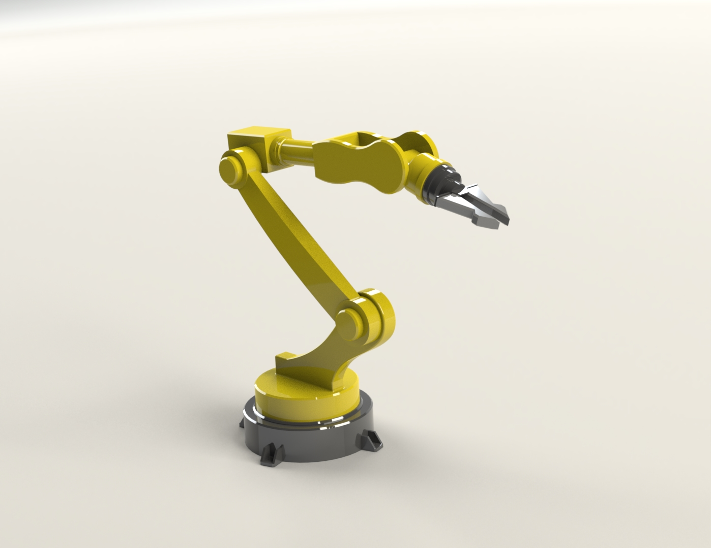

For this project, I really wanted to learn about real-world applications for Robotics. The most common examply is that of a pick and palce robot used on a manufacturing line. I first needed to start with a basic cad model of a simple 6 DOF arm that I could then export as a URDF file to run Gazebvo simulations with. I was already aware of a solidworks extension that could automate this process for me so all I had to do was create the model and optimize it for URDF export.
For this project, I really wanted to learn about real-world applications for Robotics. The most common examply is that of a pick and palce robot used on a manufacturing line
URDF (Universal Robotic Description Format) is an XML-based file format used to describe robot models in the context of robotics and simulation. It provides a standardized way to represent the kinematics, dynamics, visual appearance, and other properties of a robot. To create a URDF file from a SolidWorks model, I utilized a SolidWorks extension specifically designed for exporting to URDF format. First, I created and optimized a 3D CAD model of a 6 DOF robotic arm in SolidWorks. Then, with the extension installed, I initiated the export process. The extension intelligently extracted the necessary information from the SolidWorks model, including joint limits, link geometries, and inertial properties. It also generated the corresponding URDF tags and structure. This streamlined approach saved me valuable time and effort, allowing me to focus on the actual design and simulation aspects of the project.